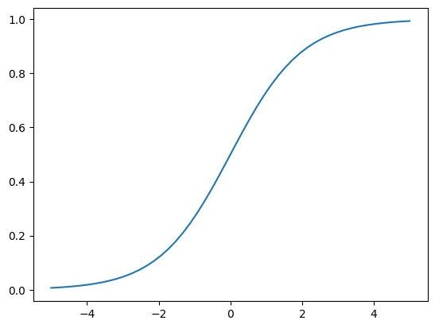

A Brief Intro to Matplotlib
Matplotlib is one of the most popular and flexible function libraries for data visualization in use today. This crash course is meant to summarize and compliment the official documentation, but you are encouraged to refer to the original documentation for fuller explanations of function arguments.
Prerequisites
In order to follow this course, you will need to be familiar with:
The Python 3.X language, data structures (e.g. dictionaries), and built-in functions (e.g. string manipulation functions)
NumPy: array I/O and manipulation
It will also help to have experience with:
SciPy
Pandas
LaTeX math typesetting
You should be familiar with the meanings of the terms args and kwargs, since they will appear frequently:
argsrefer to positional arguments, which are usually mandatory, but not always. These always come before thekwargs.kwargsare short for keyword arguments. These are usually optional, but it’s fairly common for some python functions to require a variable subset of all available kwargs dependent on previous inputs. These always come afterargs.
Load and Run
In most cases, you will need to load a compatible version of SciPy-bundle to use NumPy, which you will need to create or prepare data for plotting.
from matplotlib import pyplot as plt
In all cases, once you have reached the stage where you are at a Python command prompt or in a script file, the first thing you will have to do to use any plotting commands is import matplotlib.pyplot. Usually the command is written as it is in the title of this info box, but you can also just write import matplotlib.pyplot as plt for short. If you work in a development environment like Spyder, that will often be the only package that you need out of Matplotlib.
If you use Matplotlib at the command line, you will need to load the module Tkinter and then, after importing matplotlib, set matplotlib.use('TkAgg') in your script or at the Python prompt in order to view your plots.
Alternatively, you can use a GUI, either JupyterLab or Spyder, but you will still have to pre-load Matplotlib and any other modules you want to use (if you forget any, you’ll have to close the GUI and reopen it after loading the missing modules) before loading either of them. The command to start Jupyter Lab after you load it is jupyter-lab, and the Spyder launch command is spyder3. The only version of Spyder available is pretty old, but the backend should work as-is.
As of 27-11-2024, ml spider matplotlib outputs the following versions:
----------------------------------------------------------------------------
matplotlib:
----------------------------------------------------------------------------
Versions:
matplotlib/2.2.4-Python-2.7.15
matplotlib/2.2.4-Python-2.7.16
matplotlib/2.2.4 (E)
matplotlib/2.2.5-Python-2.7.18
matplotlib/2.2.5 (E)
matplotlib/3.1.1-Python-3.7.4
matplotlib/3.1.1 (E)
matplotlib/3.2.1-Python-3.8.2
matplotlib/3.2.1 (E)
matplotlib/3.3.3
matplotlib/3.3.3 (E)
matplotlib/3.4.2
matplotlib/3.4.2 (E)
matplotlib/3.4.3
matplotlib/3.4.3 (E)
matplotlib/3.5.2-Python-3.8.6
matplotlib/3.5.2
matplotlib/3.5.2 (E)
matplotlib/3.7.0
matplotlib/3.7.0 (E)
matplotlib/3.7.2
matplotlib/3.7.2 (E)
matplotlib/3.8.2
matplotlib/3.8.2 (E)
Names marked by a trailing (E) are extensions provided by another module.
On Cosmos, it is recommended that you use the On-Demand Spyder or Jupyter applications to use Matplotlib. Some Matplotlib scripts will be demonstrated on Cosmos with Spyder.
If you must work on the command line, then you will need to load matplotlib separately, along with all the prerequisite modules (don’t forget the SciPy-bundle if you plan to use NumPy, SciPy, or Pandas!). The module Tkinter loads as a dependency of Matplotlib, but after importing matplotlib, you still need to set matplotlib.use('TkAgg') in your script or at the Python prompt in order to view your plots.
As of 27-11-2024, ml spider matplotlib outputs the following versions:
----------------------------------------------------------------------------
matplotlib:
----------------------------------------------------------------------------
Description:
matplotlib is a python 2D plotting library which produces publication
quality figures in a variety of hardcopy formats and interactive
environments across platforms. matplotlib can be used in python
scripts, the python and ipython shell, web application servers, and
six graphical user interface toolkits.
Versions:
matplotlib/2.2.5-Python-2.7.18
matplotlib/3.3.3
matplotlib/3.4.2
matplotlib/3.4.3
matplotlib/3.5.2
matplotlib/3.7.0
matplotlib/3.7.2
matplotlib/3.8.2
matplotlib/3.9.2
----------------------------------------------------------------------------
There is a bug in matplotlib/3.9.2, so for now that version should be avoided.
On Pelle, there is currently only 1 version of Matplotlib, matplotlib/3.9.2-gfbf-2024a, and it can be loaded directly. The following shows the output of ml (module list) after loading matplotlib/3.9.2-gfbf-2024a:
Currently Loaded Modules:
1) GCCcore/13.3.0 25) freetype/2.13.2-GCCcore-13.3.0
2) zlib/1.3.1-GCCcore-13.3.0 26) expat/2.6.2-GCCcore-13.3.0
3) binutils/2.42-GCCcore-13.3.0 27) util-linux/2.40-GCCcore-13.3.0
4) GCC/13.3.0 28) fontconfig/2.15.0-GCCcore-13.3.0
5) OpenBLAS/0.3.27-GCC-13.3.0 29) xorg-macros/1.20.1-GCCcore-13.3.0
6) FlexiBLAS/3.4.4-GCC-13.3.0 30) libpciaccess/0.18.1-GCCcore-13.3.0
7) FFTW/3.3.10-GCC-13.3.0 31) X11/20240607-GCCcore-13.3.0
8) gfbf/2024a 32) Tk/8.6.14-GCCcore-13.3.0
9) bzip2/1.0.8-GCCcore-13.3.0 33) Tkinter/3.12.3-GCCcore-13.3.0
10) ncurses/6.5-GCCcore-13.3.0 34) NASM/2.16.03-GCCcore-13.3.0
11) libreadline/8.2-GCCcore-13.3.0 35) libjpeg-turbo/3.0.1-GCCcore-13.3.0
12) Tcl/8.6.14-GCCcore-13.3.0 36) jbigkit/2.1-GCCcore-13.3.0
13) SQLite/3.45.3-GCCcore-13.3.0 37) gzip/1.13-GCCcore-13.3.0
14) XZ/5.4.5-GCCcore-13.3.0 38) lz4/1.9.4-GCCcore-13.3.0
15) libffi/3.4.5-GCCcore-13.3.0 39) zstd/1.5.6-GCCcore-13.3.0
16) OpenSSL/3 40) libdeflate/1.20-GCCcore-13.3.0
17) Python/3.12.3-GCCcore-13.3.0 41) LibTIFF/4.6.0-GCCcore-13.3.0
18) cffi/1.16.0-GCCcore-13.3.0 42) giflib/5.2.1-GCCcore-13.3.0
19) cryptography/42.0.8-GCCcore-13.3.0 43) libwebp/1.4.0-GCCcore-13.3.0
20) virtualenv/20.26.2-GCCcore-13.3.0 44) OpenJPEG/2.5.2-GCCcore-13.3.0
21) Python-bundle-PyPI/2024.06-GCCcore-13.3.0 45) LittleCMS/2.16-GCCcore-13.3.0
22) SciPy-bundle/2024.05-gfbf-2024a 46) Pillow-SIMD/10.4.0-GCCcore-13.3.0
23) libpng/1.6.43-GCCcore-13.3.0 47) Qhull/2020.2-GCCcore-13.3.0
24) Brotli/1.1.0-GCCcore-13.3.0 48) matplotlib/3.9.2-gfbf-2024a
Take note of the -gfbf-2024a suffix on some Python modules and the -GCCcore-13.3.0 suffix on most other modules. You should stick to these for the duration of this course to ensure compatibility.
Matplotlib on Tetralith depends not just on GCC, but on buildtool-easybuild/4.X.X-hpcXXXXXXXXX where the X’s are alphanumeric. Loading it also does not load Python or any of its other packages automatically, so you will need to either pick a Matplotlib version and check ml avail Python for which Python and SciPy-bundle versions to load with it, or, choose your preferred Python and/or SciPy-bundle version(s) and see which if any Matplotlib modules are made available.
As of 15-04-2025, ml spider matplotlib outputs the following:
----------------------------------------------------------------------------
matplotlib:
----------------------------------------------------------------------------
Description:
matplotlib is a python 2D plotting library which produces publication
quality figures in a variety of hardcopy formats and interactive
environments across platforms. matplotlib can be used in python
scripts, the python and ipython shell, web application servers, and
six graphical user interface toolkits.
Versions:
matplotlib/3.5.2
matplotlib/3.8.2
----------------------------------------------------------------------------
For detailed information about a specific "matplotlib" package (including how to load the modules) use the module's full name.
Note that names that have a trailing (E) are extensions provided by other modules.
For example:
$ module spider matplotlib/3.8.2
----------------------------------------------------------------------------
The module Tkinter loads as a dependency of Matplotlib, but after importing matplotlib, you still need to set matplotlib.use('TkAgg') in your script or at the Python prompt in order to view your plots, and call plot.show() explicitly to make the display window appear.
We will be using Python/3.11.5, which works with matplotlib/3.8.2.
If you want to use Jupyter in this session the easiest way is this:
module load buildtool-easybuild/4.8.0-hpce082752a2 GCC/13.2.0 Python/3.11.5 SciPy-bundle/2023.11 matplotlib/3.8.2 JupyterLab/4.2.0
Due to the limited number of Thinlinc licenses, it is assumed that you will be using SSH with X-forwarding.
Note that at PDC, almost all modules require you to load a module starting with PDC (e.g. PDC/23.12, PDCOLD/XX.XX, PDCTEST/XX.XX) before loading anything else.
Also, unlike at other centers, if you load the wrong module you should either only use the
ml unload <module>command, or save a module collection to restore after usingml purge, because 13 modules are loaded when you first log in and only one of them is sticky (i.e. not removed by an ordinary purge command).
Dardel documentation generally assumes that you will need to build your own environment with conda or pip because the options available natively are fairly limited.
As of 15-04-2025, ml spider matplotlib outputs the following:
----------------------------------------------------------------------------
matplotlib:
----------------------------------------------------------------------------
Versions:
matplotlib/3.8.2-cpeGNU-23.12
matplotlib/3.8.2 (E)
Other possible modules matches:
py-matplotlib
Names marked by a trailing (E) are extensions provided by another module.
The output is misleading in that matplotlib/3.8.2-cpeGNU-23.12 is the module that provides matplotlib/3.8.2 as an extension, so there is really only that one option. This version requires Python 3.11.x, which on Dardel is best provided by cray-python/3.11.5 and cray-python/3.11.7 (both of which include NumPy, SciPy, and mpi4py). This matplotlib version also requires preloading PDC/23.12.
After importing matplotlib, you will need to set matplotlib.use('TkAgg') in your script or at the Python prompt in order to view your plots, and call plot.show() explicitly to make the display window appear.
Important
For this session, you should use the Alvis portal: https://alvis.c3se.chalmers.se/public/root/
Log in
Ask for Desktop (Compute) in left-hand side menu. Do not choose “Jupyter”, since it gives you a TensorFlow environment with Python 3.8.
Open a Terminal and load the following software modules
ml matplotlib/3.9.2-gfbf-2024a
ml Jupyter-bundle/20250530-GCCcore-13.3.0
This will load SciPy-bundle on the fly!
Pandas, like NumPy, has typically been part of the SciPy-bundle module since 2020. Use
ml spider SciPy-bundleto see which versions are available and how to load them.Then start jupyter-lab and a web browser will automatically open
jupyter-lab
Controlling the Display
Command Line. For Python 3.11.x, a Tkinter-based backend is typically required to generate figure popups when you type plt.show() at the command line (on Dardel this is preset). Backends are engines for either displaying figures or writing them to image files (see the matplotlib docs page on backends for more detail for more info). To set the appropriate backend:
import the top-level
matplotlibpackage,run
matplotlib.use('TkAgg')before doing any plotting (if you forget, you can set it at any time). If for some reason that backend or the default backend doesn’t work, you can also trymatplotlib.use('Qt5Agg').
Jupyter. In Jupyter, after importing matplotlib or any of its sub-modules, you typically need to add % matplotlib inline before you make any plots. You should not need to use matplotlib.use(...).
Spyder. In Spyder, the default setting is for figures to be displayed either in-line at the IPython console or in a “Graphics” tab in the upper right, depending on the version. In either case, the graphic will be small and not the best use of the resources Spyder makes available. To make figures appear in an interactive popup:
go to “Preferences”, then “IPython console”, and click the “Graphics” tab
toggle the drop-down menu to the right of “Backend” and select “Automatic”.
These settings should be retained from session to session, so you only have to do it the first time you run Spyder. The interactive popup for Spyder offers extensive editing and saving options.
Matplotlib uses a default resolution of 100 dpi and a default figure size of 6.4” x 4.8” (16.26 x 12.19 cm) in GUIs and with the default backend. The inline backend in Jupyter (what the % matplotlib inline command sets) uses an even lower-res default of 80 dpi.
The
dpikwarg inplt.figure()orplt.subplots()(not a valid kwarg inplt.subplot()singular) lets you change the figure resolution at runtime. For on-screen display, 100-150 dpi is fine as long as you don’t setfigsizetoo big, but publications often request 300 DPI.The
figsize = (i,j)kwarg inplt.figure()andplt.subplots()also lets you adjust the figure size and aspect ratio. The default unit is inches.
Follow the preceding sections to get to the stage of importing matplotlib.pyplot and numpy in your choice of interface, on your local computing resource.
Basic Terms and Application Programming Interface (API)
The Matplotlib documentation has a nicely standardized vocabulary for the different components of its output graphics. For all but the simplest plots, you will need to know what the different components are called and what they do so that you know how to access and manipulate them.
Figure: the first thing you do when you create a plot is make a
Figureinstance. It’s essentially the canvas, and it contains all other components.Axes: most plots have 1 or more sets of
Axes, which are the grids on which the plots are drawn, plus all text that labels the axes and their increments.Axis: each individual axis is its own object. This lets you control the labels, increments, scaling, text format, and more.
Artist: In Python, almost everything is an object. In Matplotlib, the figure and everything on it are customizable objects, and every object is an
Artist–every axis, data set, annotation, legend, etc. This word typically only comes up in the context of functions that create more complicated plot elements, like polygons or color bars.
For everything else on a typical plot, there’s this handy graphic:

fig? ax? What are those?
There are 2 choices of application programming interface (API, basically a standardized coding style) in Matplotlib:
Implicit API: the quick and dirty way to visualize isolated data sets if you don’t need to fiddle with the formatting.
Explicit API (recommended): the method that gives you handles to the figure and axes objects (typically denoted
figandax/axes, respectively) so you can adjust the formatting and/or accommodate multiple subplots.
Most people’s first attempt to plot something in matplotlib looks like the following example of the implicit API. The user simply imports matplotlib.pyplot (usually as plt) and then plugs their data into their choice of plotting function, plt.<function>(*args,**kwargs).
import numpy as np
import matplotlib.pyplot as plt
# this code block uses Jupyter to execute
%matplotlib inline
x = np.linspace(0,2*np.pi, 50) # fake some data
# Minimum working example with 2 functions
plt.plot(x,3+3*np.sin(x),'b-',
x, 2+2*np.cos(x), 'r-.')
plt.xlabel('x [rads]')
plt.ylabel('y')
plt.title('Demo Plot - Implicit API')
plt.show()
The explicit API looks more like the following example.
import numpy as np
import matplotlib.pyplot as plt
# this code block uses Jupyter to execute
%matplotlib inline
x = np.linspace(0,2*np.pi, 50)
# Better way for later formatting
fig, ax = plt.subplots()
ax.plot(x,3+3*np.sin(x),'b-')
ax.plot(x, 2+2*np.cos(x), 'r-.')
ax.set_xlabel('x [rads]')
ax.set_ylabel('y')
ax.set_title('Demo Plot - Explicit API')
plt.show()
A figure and a set of axes objects are created explicitly, usually with fig,axes = plt.subplots(nrows=nrows, ncols=ncols), even if there will be only 1 set of axes (in which case the nrows and ncols kwargs are omitted). Then the vast majority of the plotting and formatting commands are called as methods of the axes object (with the most oft-encountered exception being fig.colorbar(); see this article on colorbar placement for details). Notice that most of the formatting methods now start with set_ when called upon an axes object.
The outputs look the same for both of these examples because the plot type was chosen to work with both APIs, but the explicit API offers a much wider range of plot types and customizations.
Let x be an array of 50 values from -5 to 5. Write a script to plot y = 1/(1+exp(-x)) that will run from the command line. (Hint: Refer to the section above on Controlling the Display.)
Solution
The code block below uses Jupyter to render the output, which requires
%matplotlib inline. At the command line, you would have had to import matplotlib and setmatplotlib.use('TkAgg')or the recommended backend from the section on controlling the display.import numpy as np import matplotlib.pyplot as plt %matplotlib inline x = np.linspace(-5,5, 50) fig, ax = plt.subplots() ax.plot(x, 1/(1+np.exp(-x))) plt.show()
Subplots and Subplot Mosaics
A prime example of a feature only available through the explicit API is subplots, which support and format 2 or more separate sets of axes on the same figure. The Matplotlib documentation on subplots and subplot mosaics is extensive and fairly straightforward, so this topic will not be covered in depth here. The table below summarizes all the available subplot creation methods that you may see and their capabilities so you can compare them:
Method |
Iterable Axes |
Coordinate projections |
Row-/column-spanning subplots |
Max number of subplots |
|---|---|---|---|---|
|
Yes |
one for all subplots |
requires |
arbitrary |
|
No |
can vary per subplot |
requires |
9 |
|
No |
can vary per subplot |
requires |
9 |
|
Yes |
can vary per subplot |
Yes |
arbitrary |
|
Yes |
one for all subplots |
Yes |
arbitrary |
*Note: plt.subplot_mosaic() is recommended over plt.subplot2grid().
Mathtext and String Insertion (Not covered by Matplotlib documentation)
Most journals expect that you typeset all variables and math scripts so they appear the same in your plots as in your main text, whether those symbols appear in the axes labels, function labels, plot titles, or annotations. Matplotlib now supports most LaTeX math commands, but you need to know some basic LaTeX syntax, some of which is covered in that link. For more information, you can refer to the WikiBooks documentation on LaTeX math, starting with the Symbols section.
LaTeX may need to be installed separately for Matplotlib versions earlier than 3.7, or for exceptionally obscure symbols or odd-sized delimiters.
Unfortunately, Python and LaTeX both use curly braces ({}) as parts of different functions, so some awkward adjustments had to be made to resolve the collision. Matplotlib documentation does not cover this.
In
str.format(), all curly braces ({}) associated with LaTeX commands must be doubled ({{}}), including nested braces. An odd-numbered set of nested curly brace pairs will be interpreted as a site for string insertion.Many characters also require the whole string to have an
r(for raw input) in front of the first single- or double-quote, like \(\times\) (rendered as'$\times$'), \(\pm\) or \(\mp\)(rendered as'$\pm$'and'$\mp$'respectively), or some less-used Greek letters.Most basic operator symbols (+, -, /, >, <, !, :, |, [], ()) can be used as-is, but some that have functional meanings in LaTeX, Python, or both (e.g.
$and%) must be preceded by a single- (LaTeX command symbols only) or double-backslash (\\) to escape their typical usage.Spaces within any character sequence between two
$signs are not rendered; they only exist to separate alphabetic characters from commands. You can insert a space with\;if you don’t want to split up the LaTeX sequence to add spaces.
You can use string insertion inside of formatting operators like the super- and subscript commands, but it can require a lot of sequential curly braces. The following is an example demonstrating some tricky typesetting. Note that you generally cannot split the string text over multiple lines because the backslash has other essential uses to the typesetting.
import numpy as np
import matplotlib.pyplot as plt
%matplotlib inline
v_init=15.1
error_arr=[-0.4,0.3]
fig,ax=plt.subplots(dpi=120,figsize=(5,5))
ax.set_aspect('equal') #arrowheads look ugly if axes are not equal
ax.arrow(0, 0, 10.68, 10.68, length_includes_head=True, color='b',
head_width=0.4)
ax.text(6, 5.4, r"$|\vec{{v}}_{{\mathrm{{init}}}}|$ = ${:.1f}_{{{:.1}}}^{{+{:.1}}}\;\mathrm{{m\cdot s}}^{{-1}}$".format(v_init,*error_arr),
ha='center', va='center', rotation=45., size=14, color='b')
ax.set_xlim(0,12)
ax.set_ylim(0,12)
plt.show()
Saving your Data
The Matplotlib GUI has a typical save menu option (indicated by the usual floppy disc icon) that lets you set the name, file type, and location. To save from your code or at the command line, there are 2 options:
plt.savefig(fname, *, transparent=None, dpi='figure', format=None)is the general-purpose save function. There are other kwargs not shown here, but these are the most important. The file type can be givenformator inferred from an extension given infname. The defaultdpiis inherited fromplt.figure()orplt.subplots(). Iftransparent=True, the white background of a typical figure is removed so the figure can be displayed on top of other content.plt.imsave(fname, arr, **kwargs)is specifically for saving arrays to images. It accepts a 2D (single-channel) array with a specified colormap and normalization, or an RGB(A) array (a stack of images in 3 color channels, or 3 color channels and an opacity array). Generally you also have to setorigin='lower'for the image to be rendered right-side up.
A few common formats that Matplotlib supports include PDF, PS, EPS, PNG, and JPG/JPEG. Other desirable formats like TIFF and SVG are not supported natively in interactive display backends, but can be used with static backends (used for saving figures without displaying them) or with the installation of the Pillow module. At most facilities, Pillow is loaded with Matplotlib, so you will see SVG as a save-format option in the GUI, and it should be allowed in the format kwarg of plt.savefig(). Matplotlib has a tutorial here on importing images into arrays for use with plt.imshow().
Reformat the earlier example to save a file in the format 'svg' without going through the GUI, as you would have to do to create plots with code that runs via batch script.
Solution
If your previous code already runs at the command line, all you had to do was replace plt.show() with something like plt.savefig('my_fig', format='svg').
Standard Available Plot Types
These are the categories of plots that come standard with any Matplotlib distribution:
Pairwise plots (which accept 1D arrays of x and y data to plot against each other),
Statistical plots (which can be pairwise or other array-like data),
Gridded data plots (for image-like data, vector fields, and contours),
Irregularly gridded data plots (which rely on some kind of triangulation)*, and
Volumetric data plots.
* Quick note on contouring functions on irregular grids: these functions contour by the values Z at triangulation vertices (X,Y), not by spatial point density, and so should not be used if Z values are not spatially correlated. If you want to contour by data point density in parameter-space, you still have to interpolate your data to a regular (X,Y) grid.
Volumetric, polar, and other data that rely on 3D or non-cartesian grids typically require you to specify a projection before you can choose the right plot type. For example, for a polar plot, you could
set
fig, ax = plt.subplots(subplot_kw = {"projection": "polar"})to set all subplots to the same projection,set
ax = plt.subplot(nrows, ncols, index, projection='polar')to add one polar subplot to a group of subplots with different coordinate systems or projections, orset
ax = plt.figure().add_subplot(projection='polar')if you only need 1 set of axes in total.
For volumetric data, the options are similar:
fig, ax = plt.subplots(subplot_kw = {"projection": "3d"})for multiple subplots with the same projection,ax = plt.subplot(nrows, ncols, index, projection='3d')for one 3D subplot among several with varying projections or coordinate systems, orax = plt.figure().add_subplot(projection='3d')for a singular plot.
Colors and colormaps. Every plotting method accepts either a single color (the kwarg for which may be c or color) or a colormap (which is usually cmap in kwargs) depending on the shape of the data. Matplotlib has an excellent series of pages on how to specify colors and transparency, how to adjust colormap normalizations, and which colormaps to choose based on the types of data and your audience.
Keypoints
Matplotlib is the essential Python data visualization package, with nearly 40 different plot types to choose from depending on the shape of your data and which qualities you want to highlight.
Almost every plot will start by instantiating the figure,
fig(the blank canvas), and 1 or more axes objects,ax, withfig, ax = plt.subplots(*args, **kwargs).There are several ways to tile subplots depending on how many there are, how they are shaped, and whether they require non-Cartesian coordinate systems.
Most of the plotting and formatting commands you will use are methods of
Axesobjects. (A few, likecolorbarare methods of theFigure, and some commands are methods both.)